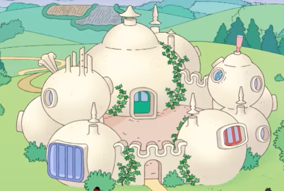

| Name | Barbadimension, Barbawelt |
| Formaler Name | BBP |
| Anzahl der Bewohner | 9 |
| Alter | 6 Milliarden Jahre |
| Existenzstatus | Vermischt mit AAA |

Die Barbapapas
Die Barbadimension war einmal wie eine normale Welt in den 80er Jahren, bevor ein verrückter Wissenschaftler Barbapapa und Barbamama erschuf, welche sich auch bald vermehrten. Ihre Familie fraß und tötete alle anderen Einwohner, und sie sind immer noch hungrig nach Blut.
Barbapapa, Barbamama, Barbarix, Barbabo, Barbakus, Barbawum, Barbabella, Barbaletta, Barbalala